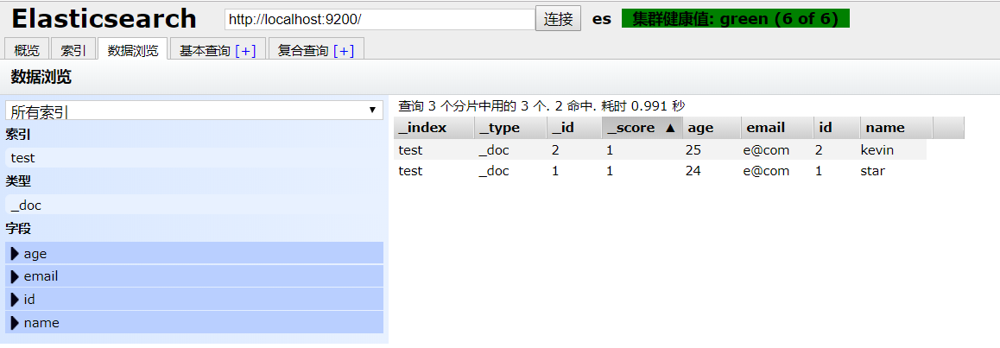
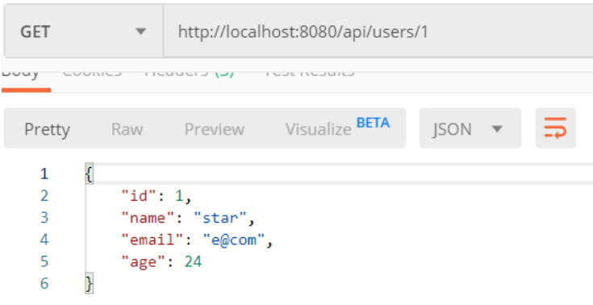

ElasticSearch 是一个基于 Lucene 的搜索服务器。它提供了一个分布式多用户能力的全文搜索引擎，基于 RESTful web 接口。Elasticsearch 是用 Java 语言开发的，并作为 Apache 许可条款下的开放源码发布，是一种流行的企业级搜索引擎。ElasticSearch 用于云计算中，能够达到实时搜索、稳定、可靠、快速、安装使用方便。官方客户端在 Java、.NET、PHP、Python、Apache Groovy、Ruby 和许多其他语言中都是可用的。
本文主要讲述了 Spring Boot 如何集成 ElasticSearch 搜索引擎，并使用 ElasticSearch 官方提供的 Java High Level REST Client 进行 Java 客户端操作。
环境准备
- ElasticSearch 7.5.1
- Spring Boot 2.1.9
首先需要安装 ElasticSearch 环境，并且最好安装一个 ElasticSearch 可视化界面（这里推荐 ElasticSearch Head 插件）便于我们查看数据。
ElasticSearch 和 ElasticSearch Head 安装可以参考本人写的这篇博客：Widows 环境下安装 ElasticSearch 并配置 ElasticSearch Head 插件
添加依赖
在 pom.xml 文件中，添加 ElasticSearch 提供的 Java High Level REST Client 相关依赖。
注意：在添加 ElasticSearch 相关依赖时，一定要指明版本号。如果不指定版本号，会直接继承 Spring Boot 的版本号，这样会导致与 ElasticSearch 的版本不一致，而出现错误。
1 | <!-- ElasticSearch High Level Client --> |
2 | <dependency> |
3 | <groupId>org.elasticsearch.client</groupId> |
4 | <artifactId>elasticsearch-rest-high-level-client</artifactId> |
5 | <version>7.5.1</version> |
6 | </dependency> |
7 | |
8 | <dependency> |
9 | <groupId>org.elasticsearch</groupId> |
10 | <artifactId>elasticsearch</artifactId> |
11 | <version>7.5.1</version> |
12 | </dependency> |
13 | |
14 | <dependency> |
15 | <groupId>org.elasticsearch.client</groupId> |
16 | <artifactId>elasticsearch-rest-client</artifactId> |
17 | <version>7.5.1</version> |
18 | </dependency> |
19 | <!-- ./ ElasticSearch High Level Client --> |
配置 RestHighLevelClient
这里进行 RestHighLevelClient 配置，用于操作 ElasticSearch。
1 | /** |
2 | * EsRestHighLevelClient |
3 | * |
4 | * @author star |
5 | */ |
6 | |
7 | public class EsRestHighLevelClientConfig { |
8 | |
9 | ("${spring.elasticsearch.rest.scheme}") |
10 | private String scheme; |
11 | |
12 | ("${spring.elasticsearch.rest.ip-address}") |
13 | private List<String> ipAddressList; |
14 | |
15 | |
16 | public RestHighLevelClient restHighLevelClient() { |
17 | return new RestHighLevelClient(RestClient.builder(this.createHttpHost())); |
18 | } |
19 | |
20 | /** |
21 | * 创建 HttpHost 对象 |
22 | * |
23 | * @return 返回 HttpHost 对象数组 |
24 | */ |
25 | private HttpHost[] createHttpHost() { |
26 | Asserts.check(!CollectionUtils.isEmpty(ipAddressList), "ElasticSearch cluster ip address cannot empty"); |
27 | |
28 | HttpHost[] httpHosts = new HttpHost[ipAddressList.size()]; |
29 | for (int i = 0, len = ipAddressList.size(); i < len; i++) { |
30 | String ipAddress = ipAddressList.get(i); |
31 | String[] values = ipAddress.split(":"); |
32 | |
33 | String ip = values[0]; |
34 | int port = Integer.parseInt(values[1]); |
35 | // 创建 HttpHost |
36 | httpHosts[i] = new HttpHost(ip, port, scheme); |
37 | } |
38 | |
39 | return httpHosts; |
40 | |
41 | } |
42 | } |
编写 ElaticSearch 相关 API
- 索引创建
ElaticSearch 7.x 的版本中已经废弃了 mapping，弃用了 type，也就是一个 index 相当于一个表。
详情见官方文档关于映射类型去除部分。以下是关于 ElaticSearch 7.x 的映射类型描述：
1 | /** |
2 | * 创建 ES 索引 |
3 | * |
4 | * @param index 索引 |
5 | * @param properties 文档属性集合 |
6 | * @return 返回 true，表示创建成功 |
7 | * @throws IOException |
8 | */ |
9 | public boolean createIndex(String index, Map<String, Map<String, Object>> properties) throws IOException { |
10 | XContentBuilder builder = XContentFactory.jsonBuilder(); |
11 | // ES 7.0 后的版本中，已经弃用 type |
12 | builder.startObject() |
13 | .startObject("mappings") |
14 | .field("properties", properties) |
15 | .endObject() |
16 | .startObject("settings") |
17 | .field("number_of_shards", DEFAUT_SHARDS) |
18 | .field("number_of_replicas", DEFAUT_REPLICAS) |
19 | .endObject() |
20 | .endObject(); |
21 | |
22 | CreateIndexRequest request = new CreateIndexRequest(index).source(builder); |
23 | CreateIndexResponse response = restHighLevelClient.indices().create(request, RequestOptions.DEFAULT); |
24 | |
25 | return response.isAcknowledged(); |
26 | } |
- 判断索引是否存在
1 | /** |
2 | * 判断索引是否存在 |
3 | * |
4 | * @param index 索引 |
5 | * @return 返回 true，表示存在 |
6 | */ |
7 | public boolean isExistIndex(String index) throws IOException { |
8 | GetIndexRequest getIndexRequest = new GetIndexRequest(index); |
9 | getIndexRequest.local(false); |
10 | getIndexRequest.humanReadable(true); |
11 | getIndexRequest.includeDefaults(false); |
12 | |
13 | return restHighLevelClient.indices().exists(getIndexRequest, RequestOptions.DEFAULT); |
14 | } |
- 删除索引
1 | /** |
2 | * 删除索引 |
3 | * |
4 | * @param index 索引 |
5 | * @return 返回 true，表示删除成功 |
6 | */ |
7 | public boolean deleteIndex(String index) throws IOException { |
8 | try { |
9 | DeleteIndexRequest request = new DeleteIndexRequest(index); |
10 | AcknowledgedResponse response = restHighLevelClient.indices().delete(request, RequestOptions.DEFAULT); |
11 | |
12 | return response.isAcknowledged(); |
13 | } catch (ElasticsearchException exception) { |
14 | if (exception.status() == RestStatus.NOT_FOUND) { |
15 | throw new NotFoundException("Not found index: " + index); |
16 | } |
17 | |
18 | throw exception; |
19 | } |
20 | } |
- 保存文档
1 | /** |
2 | * 保存文档 |
3 | * <p> |
4 | * 如果文档存在，则更新文档；如果文档不存在，则保存文档。 |
5 | * |
6 | * @param document 文档数据 |
7 | */ |
8 | public void save(String index, ElasticSearchDocument<?> document) throws IOException { |
9 | IndexRequest indexRequest = new IndexRequest(index); |
10 | indexRequest.id(document.getId()); |
11 | indexRequest.source(JSON.toJSONString(document.getData()), XContentType.JSON); |
12 | // 保存文档数据 |
13 | restHighLevelClient.index(indexRequest, RequestOptions.DEFAULT); |
14 | |
15 | } |
16 | |
17 | /** |
18 | * 批量保存文档 |
19 | * <p> |
20 | * 如果集合中有些文档已经存在，则更新文档；不存在，则保存文档。 |
21 | * |
22 | * @param index 索引 |
23 | * @param documentList 文档集合 |
24 | */ |
25 | public void saveAll(String index, List<ElasticSearchDocument<?>> documentList) throws IOException { |
26 | if (CollectionUtils.isEmpty(documentList)) { |
27 | return; |
28 | } |
29 | // 批量请求 |
30 | BulkRequest bulkRequest = new BulkRequest(); |
31 | documentList.forEach(doc -> { |
32 | bulkRequest.add(new IndexRequest(index) |
33 | .id(doc.getId()) |
34 | .source(JSON.toJSONString(doc.getData()), XContentType.JSON)); |
35 | }); |
36 | |
37 | restHighLevelClient.bulk(bulkRequest, RequestOptions.DEFAULT); |
38 | |
39 | } |
- 删除文档
1 | /** |
2 | * 根据文档 ID 删除文档 |
3 | * |
4 | * @param index 索引 |
5 | * @param id 文档 ID |
6 | */ |
7 | public void delete(String index, String id) throws IOException { |
8 | DeleteRequest deleteRequest = new DeleteRequest(index, id); |
9 | |
10 | restHighLevelClient.delete(deleteRequest, RequestOptions.DEFAULT); |
11 | } |
12 | |
13 | /** |
14 | * 根据查询条件删除文档 |
15 | * |
16 | * @param index 索引 |
17 | * @param queryBuilder 查询条件构建器 |
18 | */ |
19 | public void deleteByQuery(String index, QueryBuilder queryBuilder) throws IOException { |
20 | DeleteByQueryRequest deleteRequest = new DeleteByQueryRequest(index).setQuery(queryBuilder); |
21 | deleteRequest.setConflicts("proceed"); |
22 | |
23 | restHighLevelClient.deleteByQuery(deleteRequest, RequestOptions.DEFAULT); |
24 | |
25 | } |
26 | |
27 | /** |
28 | * 根据文档 ID 批量删除文档 |
29 | * |
30 | * @param index 索引 |
31 | * @param idList 文档 ID 集合 |
32 | */ |
33 | public void deleteAll(String index, List<String> idList) throws IOException { |
34 | if (CollectionUtils.isEmpty(idList)) { |
35 | return; |
36 | } |
37 | BulkRequest bulkRequest = new BulkRequest(); |
38 | idList.forEach(id -> bulkRequest.add(new DeleteRequest(index, id))); |
39 | |
40 | restHighLevelClient.bulk(bulkRequest, RequestOptions.DEFAULT); |
41 | } |
- 获取文档
1 | /** |
2 | * 根据索引和文档 ID 获取数据 |
3 | * |
4 | * @param index 索引 |
5 | * @param id 文档 ID |
6 | * @param <T> 数据类型 |
7 | * @return T 返回 T 类型的数据 |
8 | */ |
9 | public <T> T get(String index, String id, Class<T> resultType) throws IOException { |
10 | GetRequest getRequest = new GetRequest(index, id); |
11 | GetResponse response = restHighLevelClient.get(getRequest, RequestOptions.DEFAULT); |
12 | String resultAsString = response.getSourceAsString(); |
13 | |
14 | return JSON.parseObject(resultAsString, resultType); |
15 | } |
16 | |
17 | /** |
18 | * 条件查询 |
19 | * |
20 | * @param index 索引 |
21 | * @param sourceBuilder 条件查询构建起 |
22 | * @param <T> 数据类型 |
23 | * @return T 类型的集合 |
24 | */ |
25 | public <T> List<T> searchByQuery(String index, SearchSourceBuilder sourceBuilder, Class<T> resultType) throws IOException { |
26 | // 构建查询请求 |
27 | SearchRequest searchRequest = new SearchRequest(index).source(sourceBuilder); |
28 | // 获取返回值 |
29 | SearchResponse response = restHighLevelClient.search(searchRequest, RequestOptions.DEFAULT); |
30 | SearchHit[] hits = response.getHits().getHits(); |
31 | // 创建空的查询结果集合 |
32 | List<T> results = new ArrayList<>(hits.length); |
33 | for (SearchHit hit : hits) { |
34 | // 以字符串的形式获取数据源 |
35 | String sourceAsString = hit.getSourceAsString(); |
36 | results.add(JSON.parseObject(sourceAsString, resultType)); |
37 | } |
38 | |
39 | return results; |
40 | |
41 | } |
演示
- 使用 Postman 调用接口 POST
http://localhost:8080/api/users/batch向 ElasticSearch 中插入 2 条测试数据：

- 使用可视化插件 ElasticSearch Head 查看数据：

根据 ID 获取数据：
根据 name 获取数据：


参考
ElasticSearch Java Rest Client
Spring Boot 实战之 NoSQL 整合(ElasticSearch 7.3 版本)
后记
由于自身能力有限，若有错误或者不当之处，还请大家批评指正，一起学习交流！
GitHub 源码地址：springboot-elasticsearch